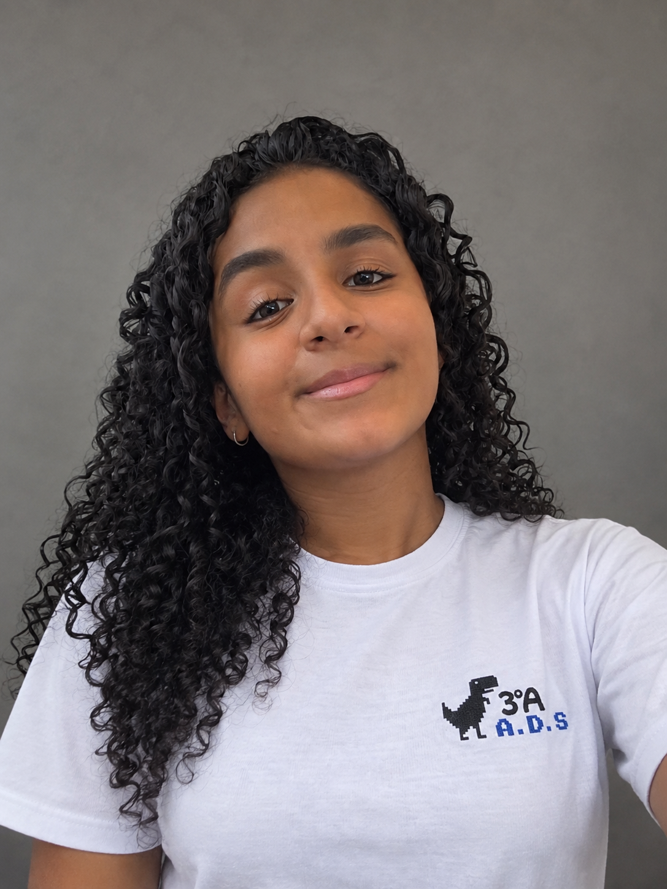
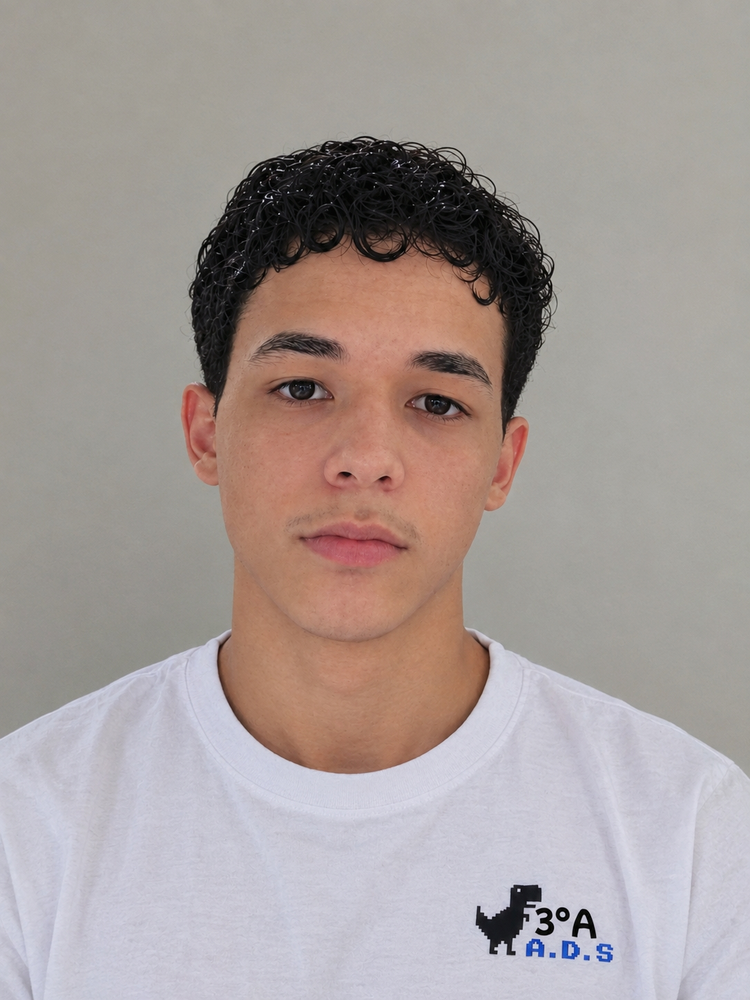
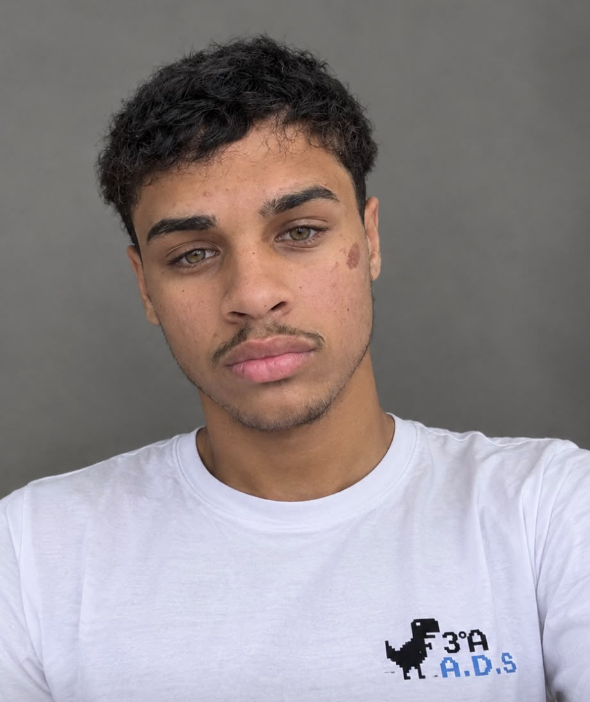
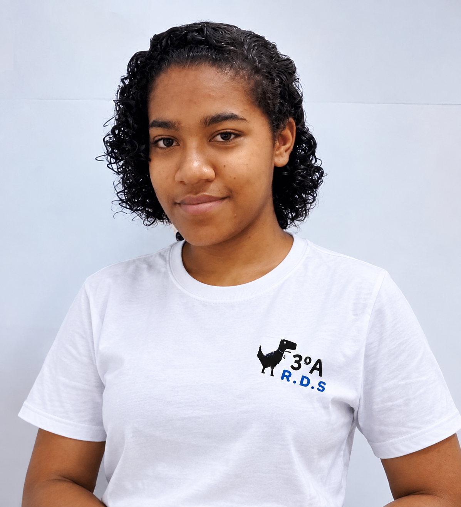

Título da Postagem
Aqui você pode escrever textos informativos, notícias, curiosidades ou conteúdos educativos. O site é totalmente personalizável.


Compartilhe informações, vídeos e imagens de forma moderna.
Aqui você pode escrever textos informativos, notícias, curiosidades ou conteúdos educativos. O site é totalmente personalizável.
Maria é uma criadora de conteúdo apaixonada por tecnologia, design e educação digital. Ela gosta de compartilhar dicas, curiosidades e conteúdos informativos para ajudar outras pessoas a aprenderem de forma simples e divertida.
Além disso, Maria trabalha com desenvolvimento web e criação de projetos interativos utilizando HTML, CSS e JavaScript.


Você também pode inserir vídeos do YouTube para deixar o blog mais dinâmico e interativo.
Deixe seu comentário e conte para nós o que você achou do Blog Interativo!
Somos Lavinia, Wesley, Bruno e Vitória, estudantes do curso técnico de Análise e Desenvolvimento de Sistemas. Durante nossa trajetória no curso, percebemos algo que muitas pessoas enfrentam ao escolher uma faculdade: a falta de informações reais sobre os cursos, instituições e, principalmente, sobre como é a vida de um universitário.
Foi dessa percepção que nasceu a ideia do nosso projeto. Criamos este blog com o objetivo de aproximar estudantes e vestibulandos de experiências reais.
Cada relato apresentado aqui representa uma trajetória diferente e mostra que não existe apenas um caminho para chegar à profissão desejada.
Este é o nosso projeto, mas as histórias são de muitas pessoas. E talvez a próxima história possa ser a sua.— Lavinia, Wesley, Bruno e Vitória

Lavinia

Wesley

Bruno

Vitória